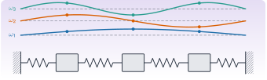
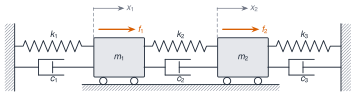

Teoría de vibraciones II y elementos finitos
M6 · Sesión S6

Objetivos y prerrequisitos
Objetivos. Al terminar la unidad sabrás:
- plantear las ecuaciones de un sistema de varios GDL y construir las matrices \(\mathbf{M}\), \(\mathbf{C}\) y \(\mathbf{K}\), con sus propiedades de simetría y definición;
- resolver el problema generalizado de autovalores para obtener frecuencias y formas modales, y normalizar las formas modales respecto de la masa;
- demostrar la ortogonalidad, explicar bajo qué hipótesis se desacoplan las ecuaciones y reconstruir la respuesta por superposición modal, incluida la matriz de FRF;
- distinguir amortiguamiento proporcional (Rayleigh) y no proporcional, y saber qué cambia (modos complejos);
- resolver numéricamente y comparar un sistema de dos masas sin amortiguamiento, con amortiguamiento proporcional y con amortiguamiento no proporcional.
Prerrequisitos. J1.5 · Arrays y álgebra lineal, J3.3 · Álgebra lineal numérica, J3.7 · Optimización. Esta unidad continúa M5, de donde se toman las definiciones de \(\omega_n\), \(\omega_d\), \(\zeta\), FRF y la convención \(e^{+i\omega t}\) (no se repiten aquí).
Temas de la unidad
- M6.1 Sistemas de n GDL: matrices de masa, rigidez y amortiguamiento
- M6.2 Frecuencias naturales, formas modales y normalización
- M6.3 Ortogonalidad, desacoplamiento y superposición modal
- M6.4 Amortiguamiento de Rayleigh y modos complejos
- M6.5 Sistemas continuos: vibración de vigas
- M6.6 Elementos finitos: elemento viga, ensamblaje y condiciones de contorno
- M6.7 Actualización de modelos (model updating): parámetros, función objetivo, MAC y sensibilidades
NotaNotación en esta unidad
\(n\) = número de GDL; \(\mathbf{x}(t)\), \(\mathbf{f}(t)\) = vectores de desplazamientos (m) y fuerzas (N); \(\omega_r\) = frecuencia natural no amortiguada del modo \(r\) (rad/s); \(\boldsymbol{\psi}_r\) = forma modal con escala arbitraria; \(\boldsymbol{\phi}_r\) = forma modal normalizada a la masa (\(\boldsymbol{\phi}_r^\top\mathbf{M}\boldsymbol{\phi}_r=1\)); \(\boldsymbol{\Phi}=[\boldsymbol{\phi}_1\cdots\boldsymbol{\phi}_n]\); \(\mathbf{q}(t)\) = coordenadas modales; \(\zeta_r\) = razón de amortiguamiento modal; \(\eta_r\) = factor de pérdidas modal (histerético); \(s_r\) = polo; \(\boldsymbol{\alpha}(\omega)\) = matriz de receptancia. Todas las FRF usan \(e^{+i\omega t}\); \(\mathbf{A}^\top\) es la transpuesta y \(\mathbf{A}^{H}\) la transpuesta conjugada. Los apuntes usan \(\varepsilon,\nu\) para los coeficientes de Rayleigh y \(\alpha,\beta\) en otro lugar: aquí se unifican como \(\alpha\) (masa) y \(\beta\) (rigidez).
NotaFuentes, correcciones y qué queda pendiente
Fuentes. Apuntes manuscritos del Máster Agrela, curso 2024-2025 (carpeta Teoría de vibraciones): MDOF.pdf y MDOF Ejemplo.pdf. PDF, p. n = página del PDF.
| Contenido | Origen |
|---|---|
| M6.1 cadena de dos masas, ecuaciones, matrices | MDOF, p. 14–15; MDOF Ejemplo, p. 1 |
| M6.1 acoplamiento estático y dinámico | MDOF, p. 20 |
| M6.2 problema de autovalores, formas, normalización | MDOF, p. 1–2, 15–16, 18–19; MDOF Ejemplo, p. 1–3 |
| M6.3 ortogonalidad, coordenadas modales | MDOF, p. 2–3, 18–20 |
| M6.3 respuesta forzada y receptancia modal (histerético) | MDOF, p. 9–11 |
| M6.4 Rayleigh | MDOF, p. 3, 21 |
| M6.4 espacio de estados, modos complejos, receptancia viscosa general | MDOF, p. 4–7, 12–13 |
| Práctica guiada (dos masas, tres casos de amortiguamiento) | MDOF Ejemplo, p. 1–9 |
Verificación numérica de los resultados de los apuntes (Julia; la propia práctica incluye el código). Se confirman: las matrices; \(\omega_1=\sqrt{0{,}4}\), \(\omega_2=1\); las formas \([1,1]\) y \([1,-\tfrac12]\); la normalización \(1/\sqrt{15}\) y \(\sqrt{2/15}\); \(\boldsymbol{\Phi}^\top\mathbf{K}\boldsymbol{\Phi}=\mathrm{diag}(0{,}4;1)\); \(\boldsymbol{\Phi}^\top\mathbf{C}\boldsymbol{\Phi}=\mathrm{diag}(1/5;1/2)\) para \(\mathbf{C}=\mathbf{K}/2\); los polinomios del denominador de \(\mathbf{H}(s)\) (proporcional: \(50s^4+35s^3+75s^2+20s+20\); no proporcional: \(50s^4+85s^3+84s^2+40s+20\)); los polos (\(-0{,}1\pm0{,}6245i\) y \(-0{,}25\pm0{,}9682i\); \(-0{,}095\pm0{,}629i\) y \(-0{,}75\pm0{,}646i\)); los residuos de ambos casos; \(\zeta_1=15{,}81\,\%\) y \(14{,}97\,\%\).
Correcciones y precisiones a los apuntes.
- MDOF, p. 2: \((\omega_r^2-\omega_s^2)\{\psi_s\}^\top[M]\{\psi_r\}=\{0\}\) se escribe con un vector, pero el resultado es un escalar (\(=0\)).
- MDOF, p. 7: las relaciones \(c_r/m_r=2\omega_r\zeta_r\) y \(k_r/m_r=\omega_r^2\) para modos complejos no son condiciones de ortogonalidad: son relaciones que cumple cada modo complejo (cociente de Rayleigh con \(\boldsymbol{\psi}^{H}\)), y se deducen del hecho de que \(s_r\) es raíz de un polinomio de segundo grado de coeficientes reales (§ M6.4). Los pasos tachados de la página no son fiables y se sustituyen.
- MDOF, p. 11: «principio de reciprocidad ⇒ matriz de receptancia simétrica» es una consecuencia de que \(\mathbf{M}\), \(\mathbf{C}\) (o \(\mathbf{D}\)) y \(\mathbf{K}\) sean simétricas; no es una propiedad que toda estructura tenga (§ M6.3).
- MDOF, p. 11 («conociendo una fila o columna se obtiene la matriz entera»): solo si se incluyen todos los modos del modelo; con modos truncados, la reconstrucción es aproximada.
- MDOF Ejemplo, p. 1: el valor de \(\alpha_2\) se lee de forma ambigua (parece «\(-7\)»); es \(-1\), como confirma la página siguiente (\(\alpha^2+1{,}4\alpha+0{,}4=0\Rightarrow\alpha=-0{,}4\) y \(-1\)).
- MDOF Ejemplo, p. 6–7: pequeñas inconsistencias de transcripción, no de método (p. ej., el segundo componente del primer modo no proporcional dice \(-j0{,}05\) y los residuos dan \(-j0{,}0588\); el residuo de \(H_{21}\) en \(\lambda_2\) aparece como \(j0{,}04\) y \(-j0{,}045\) y vale \(j0{,}0453\)). Aquí se usan los valores recalculados.
- MDOF Ejemplo, p. 7 y 9: el polo del caso proporcional aparece escrito como \(\tfrac1{10}+j\tfrac{\sqrt{39}}{10}\) y «\(C_1=2\sigma_1M_1\)»; falta el signo: \(\sigma_1=-1/10<0\) y \(c_1=-2\sigma_1m_1=1/5\).
- MDOF Ejemplo, p. 8: la conclusión ① («la frecuencia natural no amortiguada no se ve afectada, siempre») es cierta para amortiguamiento proporcional (\(|s_r|=\omega_r\): 0,6325 en ambos casos) y falsa en general: con el amortiguamiento no proporcional del ejemplo, \(|s_1|=0{,}6367\) y \(|s_2|=0{,}9934\) (en lugar de 0,6325 y 1). La conclusión ② está en blanco.
Ampliaciones externas a los apuntes (derivaciones propias): receptancia viscosa por superposición modal con modos reales (§ M6.3), cálculo de \(\alpha\) y \(\beta\) de Rayleigh a partir de dos razones de amortiguamiento (§ M6.4) y reducción simétrica del problema generalizado por Cholesky (§ M6.2). Lecturas para ampliar: (Inman 2017; Silva y Maia 1999; Ewins 2000).
Pendiente (no cubierto por estos apuntes). Vibración de vigas (M6.5), elementos finitos: elemento viga, ensamblaje y condiciones de contorno (M6.6), actualización de modelos: parámetros, función objetivo, MAC y sensibilidades (M6.7). Tampoco se desarrollan aquí el amortiguamiento de Coulomb ni la integración temporal.
Ewins, David J. 2000. Modal Testing: Theory, Practice and Application. 2.ª ed. Research Studies Press.
Silva, José M. M., y Nuno M. M. Maia, eds. 1999. Modal Analysis and Testing. Springer. https://doi.org/10.1007/978-94-011-4503-9.
Teoría breve
M6.1 Sistemas de n GDL: matrices de masa, rigidez y amortiguamiento
Un sistema de \(n\) GDL se describe con \(n\) coordenadas \(\mathbf{x}(t)=[x_1,\dots,x_n]^\top\) y la ecuación
\[ \mathbf{M}\ddot{\mathbf{x}}(t)+\mathbf{C}\dot{\mathbf{x}}(t)+\mathbf{K}\mathbf{x}(t)=\mathbf{f}(t), \tag{1}\]
con \(\mathbf{M}\), \(\mathbf{C}\), \(\mathbf{K}\) de dimensión \(n\times n\). Es el modelo espacial del sistema: sus parámetros físicos. Es lineal, de segundo orden e invariante en el tiempo (como en M5), y es una ecuación acoplada: la respuesta en una coordenada depende del movimiento de las demás.

Un ejemplo: dos masas. Sea la cadena de la Figura 1: pared–\(k_1\)–\(m_1\)–\(k_2\)–\(m_2\)–\(k_3\)–pared, con amortiguadores \(c_1\), \(c_2\), \(c_3\) en paralelo a cada muelle y fuerzas \(f_1\), \(f_2\) sobre las masas (desplazamientos \(x_1\), \(x_2\) hacia la derecha). Para la masa 1 aparecen las fuerzas \(-k_1x_1\) y \(-c_1\dot{x}_1\) del primer tramo, y las del segundo tramo, que dependen de la deformación relativa \(x_1-x_2\): \(-k_2(x_1-x_2)\) y \(-c_2(\dot{x}_1-\dot{x}_2)\). Newton da
\[ \begin{aligned} m_1\ddot{x}_1+(c_1+c_2)\dot{x}_1-c_2\dot{x}_2+(k_1+k_2)x_1-k_2x_2&=f_1,\\ m_2\ddot{x}_2+(c_2+c_3)\dot{x}_2-c_2\dot{x}_1+(k_2+k_3)x_2-k_2x_1&=f_2, \end{aligned} \]
y en forma matricial
\[ \mathbf{M}=\begin{bmatrix}m_1&0\\0&m_2\end{bmatrix},\quad \mathbf{C}=\begin{bmatrix}c_1+c_2&-c_2\\-c_2&c_2+c_3\end{bmatrix},\quad \mathbf{K}=\begin{bmatrix}k_1+k_2&-k_2\\-k_2&k_2+k_3\end{bmatrix}. \]
Regla de ensamblaje. Cada muelle de rigidez \(k\) entre las coordenadas \(i\) y \(j\) suma \(k\begin{bmatrix}1&-1\\-1&1\end{bmatrix}\) a las filas y columnas \(i\), \(j\) de \(\mathbf{K}\) (si un extremo es la pared, solo suma \(k\) en la diagonal); igual para \(\mathbf{C}\). Es el germen del ensamblaje de elementos finitos (M6.6, pendiente).
Propiedades.
- \(\mathbf{M}\), \(\mathbf{C}\) y \(\mathbf{K}\) son simétricas en los sistemas habituales; esta simetría es la que más adelante produce la reciprocidad de la FRF (M6.3).
- \(\mathbf{M}\) es definida positiva (toda coordenada tiene inercia).
- \(\mathbf{K}\) es semidefinida positiva; es definida positiva si el sistema está sujeto (como aquí). Si no lo está (libre–libre), \(\mathbf{K}\) es singular y hay modos de sólido rígido con \(\omega=0\).
- Acoplamiento. Un término no diagonal en \(\mathbf{K}\) es acoplamiento estático (o elástico); en \(\mathbf{M}\), acoplamiento dinámico (o inercial). Las matrices dependen de las coordenadas elegidas: un cambio de coordenadas puede eliminar el acoplamiento, y eso es justo lo que hace el análisis modal (M6.3).
M6.2 Frecuencias naturales, formas modales y normalización
Sin amortiguamiento ni fuerzas, \(\mathbf{M}\ddot{\mathbf{x}}+\mathbf{K}\mathbf{x}=\mathbf{0}\). Buscamos movimientos síncronos, \(\mathbf{x}(t)=\mathbf{X}e^{i\omega t}\), en los que todas las coordenadas oscilan a la misma frecuencia:
\[ (\mathbf{K}-\omega^2\mathbf{M})\,\mathbf{X}=\mathbf{0}. \tag{2}\]
Es un problema generalizado de autovalores. El sistema homogéneo tiene solución no nula solo si
\[ \det(\mathbf{K}-\omega^2\mathbf{M})=0, \]
un polinomio de grado \(n\) en \(\omega^2\) cuyas raíces son \(\omega_1^2,\dots,\omega_n^2\) (las frecuencias naturales, reales y no negativas cuando \(\mathbf{M}>0\) y \(\mathbf{K}\ge0\) son simétricas). Para cada \(\omega_r\), la ecuación ecuación 2 determina un vector \(\boldsymbol{\psi}_r\): la forma modal, solo hasta un factor de escala, porque la ecuación es homogénea (\(\mathbf{X}\) y \(c\mathbf{X}\) son soluciones). Las frecuencias son propiedades únicas de la estructura; las formas solo están definidas en sus proporciones relativas. Hay \(n\) modos para \(n\) GDL. Si dos frecuencias coinciden (autovalor repetido), las formas correspondientes no están determinadas de forma única ni son ortogonales automáticamente (se pueden escoger ortogonales).
Normalización. Hay que fijar la escala por convención. La más habitual es la normalización a la masa,
\[ \boldsymbol{\phi}_r=\frac{\boldsymbol{\psi}_r}{\sqrt{m_r}},\quad m_r=\boldsymbol{\psi}_r^\top\mathbf{M}\boldsymbol{\psi}_r\ \Rightarrow\ \boldsymbol{\Phi}^\top\mathbf{M}\boldsymbol{\Phi}=\mathbf{I},\quad \boldsymbol{\Phi}^\top\mathbf{K}\boldsymbol{\Phi}=\mathrm{diag}(\omega_r^2), \]
donde \(m_r\) es la masa modal (o generalizada) y \(k_r=\boldsymbol{\psi}_r^\top\mathbf{K}\boldsymbol{\psi}_r\) la rigidez modal, con \(\omega_r^2=k_r/m_r\). Cambiar la escala altera \(m_r\) y \(k_r\) (ambas arbitrarias) pero no su cociente. Otras normalizaciones (componente máxima unitaria, norma unitaria) son igualmente válidas; hay que indicar siempre cuál se usa. El signo global de cada forma también es arbitrario.
Cálculo numérico. Como \(\mathbf{M}=\mathbf{L}\mathbf{L}^\top\) (Cholesky), \(\mathbf{K}\boldsymbol{\psi}=\omega^2\mathbf{M}\boldsymbol{\psi}\) se transforma en el problema simétrico estándar \(\tilde{\mathbf{K}}\mathbf{y}=\omega^2\mathbf{y}\) con \(\tilde{\mathbf{K}}=\mathbf{L}^{-1}\mathbf{K}\mathbf{L}^{-\top}\) y \(\boldsymbol{\psi}=\mathbf{L}^{-\top}\mathbf{y}\); ese camino produce directamente formas normalizadas a la masa. En Julia, eigen(Symmetric(K), Symmetric(M)) lo resuelve (véase J3.3).
El ejemplo de dos masas (\(m_1=5\), \(m_2=10\), \(k_1=k_2=2\), \(k_3=4\); valores en unidades coherentes, p. ej. kg y N/m): \(\mathbf{M}=\mathrm{diag}(5,10)\) y \(\mathbf{K}=\begin{bmatrix}4&-2\\-2&6\end{bmatrix}\). La ecuación característica \((4-5\lambda)(6-10\lambda)-4=0\) con \(\lambda=\omega^2\) da \(\lambda^2-1{,}4\lambda+0{,}4=0\), es decir \(\omega_1^2=0{,}4\) y \(\omega_2^2=1\):
| Modo | \(\omega_r\) (rad/s) | \(f_r\) (Hz) | Forma (\(\psi_1=1\)) | Forma normalizada a la masa |
|---|---|---|---|---|
| 1 | \(0{,}6325\) | \(0{,}1007\) | \([1,\ 1]\) | \([1/\sqrt{15},\ 1/\sqrt{15}]=[0{,}2582,\ 0{,}2582]\) |
| 2 | \(1{,}0000\) | \(0{,}1592\) | \([1,\ -1/2]\) | \([\sqrt{2/15},\ -\sqrt{2/15}/2]=[0{,}3651,\ -0{,}1826]\) |
El primer modo es el de las dos masas en fase; el segundo, el de las masas en oposición de fase, con un punto fijo entre ellas.
Simulación 1. Dos masas. Cambia masas, rigideces y amortiguamiento y mira cómo se mueven las frecuencias, las formas y las FRF.
M6.3 Ortogonalidad, desacoplamiento y superposición modal
Teorema 1 Ortogonalidad de las formas modales. Sean \(\mathbf{M}\) y \(\mathbf{K}\) simétricas (con \(\mathbf{M}\) definida positiva) y dos modos con \(\omega_r\neq\omega_s\). Entonces
\[ \boldsymbol{\psi}_s^\top\mathbf{M}\boldsymbol{\psi}_r=0,\qquad \boldsymbol{\psi}_s^\top\mathbf{K}\boldsymbol{\psi}_r=0 . \]
NotaDemostración
Partimos de \(\mathbf{K}\boldsymbol{\psi}_r=\omega_r^2\mathbf{M}\boldsymbol{\psi}_r\) y \(\mathbf{K}\boldsymbol{\psi}_s=\omega_s^2\mathbf{M}\boldsymbol{\psi}_s\). Premultiplicamos la primera por \(\boldsymbol{\psi}_s^\top\) y la segunda por \(\boldsymbol{\psi}_r^\top\). Como \(\mathbf{M}\) y \(\mathbf{K}\) son simétricas, \(\boldsymbol{\psi}_s^\top\mathbf{K}\boldsymbol{\psi}_r=\boldsymbol{\psi}_r^\top\mathbf{K}\boldsymbol{\psi}_s\) y lo mismo con \(\mathbf{M}\). Al restar resulta \((\omega_r^2-\omega_s^2)\,\boldsymbol{\psi}_s^\top\mathbf{M}\boldsymbol{\psi}_r=0\) (un escalar); como \(\omega_r\neq\omega_s\), \(\boldsymbol{\psi}_s^\top\mathbf{M}\boldsymbol{\psi}_r=0\). Sustituyendo en \(\boldsymbol{\psi}_s^\top\mathbf{K}\boldsymbol{\psi}_r=\omega_r^2\,\boldsymbol{\psi}_s^\top\mathbf{M}\boldsymbol{\psi}_r\) se obtiene también \(\boldsymbol{\psi}_s^\top\mathbf{K}\boldsymbol{\psi}_r=0\).
Es una ortogonalidad ponderada por \(\mathbf{M}\) y por \(\mathbf{K}\). Hipótesis necesarias: \(\mathbf{M}\) y \(\mathbf{K}\) simétricas (y \(\mathbf{M}\) definida positiva para que existan modos reales y la masa modal sea positiva); autovalores distintos, o formas elegidas ortogonales si hay repetidos. No se exige nada de \(\mathbf{C}\) en este paso.
Como consecuencia, las \(n\) formas son linealmente independientes y forman una base de \(\mathbb{R}^n\): cualquier vector de desplazamientos puede escribirse como combinación de formas modales.
Coordenadas modales y desacoplamiento. Hacemos el cambio de coordenadas \(\mathbf{x}(t)=\boldsymbol{\Phi}\mathbf{q}(t)\), con \(\mathbf{q}\) las coordenadas modales (o principales). Sustituyendo en ecuación 1 y premultiplicando por \(\boldsymbol{\Phi}^\top\):
\[ \underbrace{\boldsymbol{\Phi}^\top\mathbf{M}\boldsymbol{\Phi}}_{\mathbf{I}}\ddot{\mathbf{q}}+\boldsymbol{\Phi}^\top\mathbf{C}\boldsymbol{\Phi}\,\dot{\mathbf{q}}+\underbrace{\boldsymbol{\Phi}^\top\mathbf{K}\boldsymbol{\Phi}}_{\mathrm{diag}(\omega_r^2)}\mathbf{q}=\boldsymbol{\Phi}^\top\mathbf{f}. \]
Sin amortiguamiento (\(\mathbf{C}=\mathbf{0}\)), o con amortiguamiento proporcional (de modo que \(\boldsymbol{\Phi}^\top\mathbf{C}\boldsymbol{\Phi}=\mathrm{diag}(2\zeta_r\omega_r)\), § M6.4), las \(n\) ecuaciones quedan desacopladas: cada una es un oscilador de 1 GDL de M5,
\[ \ddot{q}_r+2\zeta_r\omega_r\dot{q}_r+\omega_r^2q_r=\boldsymbol{\phi}_r^\top\mathbf{f}(t),\qquad r=1,\dots,n. \]
La respuesta física es la superposición modal \(\mathbf{x}(t)=\sum_{r=1}^{n}\boldsymbol{\phi}_r\,q_r(t)\). Importante: con amortiguamiento no proporcional, \(\boldsymbol{\Phi}^\top\mathbf{C}\boldsymbol{\Phi}\) no es diagonal y estas coordenadas no desacoplan el sistema (§ M6.4).
Respuesta forzada armónica y matriz de FRF. Con \(\mathbf{f}=\mathbf{F}e^{i\omega t}\), el régimen estacionario es \(\mathbf{x}=\bar{\mathbf{X}}e^{i\omega t}\) y
\[ \bar{\mathbf{X}}=\boldsymbol{\alpha}(\omega)\mathbf{F},\qquad \boldsymbol{\alpha}(\omega)=\big(\mathbf{K}-\omega^2\mathbf{M}+i\omega\mathbf{C}\big)^{-1}\quad(\text{viscoso}), \]
la matriz de receptancia \(n\times n\), que contiene toda la información dinámica del sistema. El elemento \(\alpha_{jk}\) es la FRF entre la respuesta en la coordenada \(j\) y una fuerza única aplicada en la \(k\). Para amortiguamiento viscoso proporcional, resolviendo cada ecuación modal con \(q_r=\boldsymbol{\phi}_r^\top\mathbf{F}/(\omega_r^2-\omega^2+2i\zeta_r\omega_r\omega)\), se llega a
\[ \alpha_{jk}(\omega)=\sum_{r=1}^{n}\frac{\phi_{jr}\,\phi_{kr}}{\omega_r^2-\omega^2+2i\,\zeta_r\,\omega_r\,\omega}. \tag{3}\]
Con el modelo histerético proporcional (apuntes, p. 10–11), la misma estructura con \(\omega_r^2-\omega^2+i\,\eta_r\omega_r^2\) en el denominador, siendo \(\lambda_r^2=\omega_r^2(1+i\eta_r)\) los autovalores del problema complejo. Si las formas son complejas (amortiguamiento no proporcional), el numerador es complejo.
Lo que dice ecuación 3 en términos físicos: la respuesta total es la suma de las contribuciones de \(n\) osciladores de 1 GDL, cada uno ponderado por el producto de las componentes de la forma en los puntos de respuesta \(j\) y de excitación \(k\). Dos conclusiones:
- Reciprocidad. \(\alpha_{jk}=\alpha_{kj}\), es decir, \(\boldsymbol{\alpha}\) es simétrica: la respuesta en \(j\) por una fuerza en \(k\) iguala a la respuesta en \(k\) por la misma fuerza en \(j\) (dos puntos de un mismo sistema). Es consecuencia de que \(\mathbf{M}\), \(\mathbf{C}\) y \(\mathbf{K}\) sean simétricas; sistemas con efectos no recíprocos (p. ej., giroscópicos) no la cumplen.
- Constantes modales. El numerador \(_rA_{jk}=\phi_{jr}\phi_{kr}\) de cada modo tiene rango uno: \(_rA_{jk}\,{}_rA_{lm}={}_rA_{jm}\,{}_rA_{lk}\). Por ello, conociendo una columna completa de \(\boldsymbol{\alpha}\) (con todos los modos del modelo) se determinan las formas y toda la matriz; y los puntos de excitación y respuesta se pueden intercambiar. Con un número finito de modos (truncamiento) esto vale solo de forma aproximada.
Esta es la base de la identificación modal de M7.3.
Comprobación numérica con el ejemplo de dos masas. Con \(\mathbf{C}=\mathbf{K}/2\) (proporcional), la suma modal real ecuación 3 coincide con la inversión directa de \(\mathbf{K}-\omega^2\mathbf{M}+i\omega\mathbf{C}\): por ejemplo, \(\alpha_{11}(0{,}5)=0{,}46769-0{,}25846\,i\), \(\alpha_{21}(0{,}5)=0{,}22769-0{,}17846\,i\) y \(\alpha_{22}(0{,}5)=0{,}34769-0{,}21846\,i\) (m/N), con diferencias del orden de \(10^{-15}\).
AdvertenciaErrores frecuentes
- Aplicar la ortogonalidad con \(\mathbf{M}\) y \(\mathbf{K}\) no simétricas (p. ej., por una mala construcción de las matrices).
- Olvidar que las formas son relativas: sus valores absolutos dependen de la normalización; solo son comparables dentro de una misma convención.
- Usar la suma modal real ecuación 3 con amortiguamiento no proporcional.
M6.4 Amortiguamiento de Rayleigh y modos complejos
Núcleo docente: amortiguamiento proporcional (Rayleigh)
El amortiguamiento es proporcional si \(\mathbf{C}\) es combinación lineal de \(\mathbf{M}\) y \(\mathbf{K}\),
\[ \mathbf{C}=\alpha\,\mathbf{M}+\beta\,\mathbf{K}\qquad(\alpha\ \text{en s}^{-1},\ \beta\ \text{en s}). \]
Proposición 1 Razones de amortiguamiento de Rayleigh. Con \(\mathbf{C}=\alpha\mathbf{M}+\beta\mathbf{K}\), las ecuaciones modales siguen desacopladas y
\[ \zeta_r=\frac{\alpha}{2\omega_r}+\frac{\beta\,\omega_r}{2}. \tag{4}\]
NotaDemostración
Con formas normalizadas a la masa, \(\boldsymbol{\Phi}^\top\mathbf{C}\boldsymbol{\Phi}=\alpha\boldsymbol{\Phi}^\top\mathbf{M}\boldsymbol{\Phi}+\beta\boldsymbol{\Phi}^\top\mathbf{K}\boldsymbol{\Phi}=\alpha\mathbf{I}+\beta\,\mathrm{diag}(\omega_r^2)\), que es diagonal. La ecuación modal \(r\) es entonces \(\ddot{q}_r+(\alpha+\beta\omega_r^2)\dot{q}_r+\omega_r^2q_r=\boldsymbol{\phi}_r^\top\mathbf{f}\) y, al identificarla con \(\ddot{q}_r+2\zeta_r\omega_r\dot{q}_r+\omega_r^2q_r\), \(2\zeta_r\omega_r=\alpha+\beta\omega_r^2\), de donde sale la expresión.
El término en \(\alpha\) (proporcional a la masa) domina a baja frecuencia y decrece con \(\omega_r\); el de \(\beta\) (proporcional a la rigidez) crece con \(\omega_r\) y domina a alta frecuencia. Los modos son reales y los mismos que los no amortiguados; solo cambian los polos. A partir de dos razones de amortiguamiento deseadas \(\zeta_1,\zeta_2\) en dos frecuencias \(\omega_1,\omega_2\), se pueden fijar las constantes resolviendo el sistema lineal ecuación 4:
\[ \beta=\frac{2(\omega_2\zeta_2-\omega_1\zeta_1)}{\omega_2^2-\omega_1^2},\qquad \alpha=\frac{2\omega_1\omega_2(\omega_2\zeta_1-\omega_1\zeta_2)}{\omega_2^2-\omega_1^2}. \]
Rayleigh es un modelo de conveniencia: no tiene por qué describir la disipación física de la estructura (los modos intermedios quedan determinados por la curva ecuación 4 y los de frecuencia mucho mayor resultan muy amortiguados). Hay familias más generales de amortiguamiento proporcional, que no se tratan aquí.
Ejemplo. En el sistema de dos masas, \(c_1=c_2=1\), \(c_3=2\) da \(\mathbf{C}=\begin{bmatrix}2&-1\\-1&3\end{bmatrix}=\tfrac12\mathbf{K}\), es decir \(\alpha=0\), \(\beta=1/2\): \(\zeta_1=\beta\omega_1/2=0{,}1581\) y \(\zeta_2=\beta\omega_2/2=0{,}25\); los polos son \(-0{,}1\pm0{,}6245\,i\) y \(-0{,}25\pm0{,}9682\,i\).
Simulación 2. Curva de Rayleigh. Elige \(\alpha\) y \(\beta\) y observa \(\zeta(\omega)\) en las dos frecuencias del ejemplo.
Ampliación avanzada: amortiguamiento no proporcional y modos complejos
En general \(\mathbf{C}\) no es proporcional. Si \(\boldsymbol{\Phi}^\top\mathbf{C}\boldsymbol{\Phi}\) no es diagonal (con amortiguamiento pequeño se puede a veces despreciar el término cruzado; si es grande, no), el problema deja de desacoplarse con las formas reales. Se resuelve en el espacio de estados.
Espacio de estados. Con el vector de estado \(\mathbf{u}=[\mathbf{x};\dot{\mathbf{x}}]\) de dimensión \(2n\), la ecuación homogénea \(\mathbf{M}\ddot{\mathbf{x}}+\mathbf{C}\dot{\mathbf{x}}+\mathbf{K}\mathbf{x}=\mathbf{0}\) se escribe
\[ \mathbf{A}\dot{\mathbf{u}}+\mathbf{B}\mathbf{u}=\mathbf{0},\qquad \mathbf{A}=\begin{bmatrix}\mathbf{C}&\mathbf{M}\\\mathbf{M}&\mathbf{0}\end{bmatrix},\quad \mathbf{B}=\begin{bmatrix}\mathbf{K}&\mathbf{0}\\\mathbf{0}&-\mathbf{M}\end{bmatrix}, \]
con \(\mathbf{A}\) y \(\mathbf{B}\) reales y simétricas de dimensión \(2n\times2n\). Buscando \(\mathbf{u}=\mathbf{U}e^{st}\) queda el problema generalizado \((s\mathbf{A}+\mathbf{B})\mathbf{U}=\mathbf{0}\), con \(2n\) autovalores \(s_r\) reales o en pares complejos conjugados; si el sistema es subamortiguado, todos son pares complejos. Los autovectores tienen la forma \([\boldsymbol{\psi}_r;\,s_r\boldsymbol{\psi}_r]\) y son, en general, complejos: las componentes de \(\boldsymbol{\psi}_r\) tienen fases distintas de \(0^\circ\) y \(180^\circ\), de modo que los puntos de la estructura no alcanzan sus máximos a la vez (un «modo animado» es una secuencia de configuraciones a distintos instantes, y no una forma que se limita a escalar).
Parámetros modales de un modo complejo. De \(s_r^2\mathbf{M}\boldsymbol{\psi}_r+s_r\mathbf{C}\boldsymbol{\psi}_r+\mathbf{K}\boldsymbol{\psi}_r=\mathbf{0}\), premultiplicando por \(\boldsymbol{\psi}_r^{H}\) resulta \(a\,s_r^2+b\,s_r+c=0\) con \(a=\boldsymbol{\psi}_r^{H}\mathbf{M}\boldsymbol{\psi}_r\), \(b=\boldsymbol{\psi}_r^{H}\mathbf{C}\boldsymbol{\psi}_r\) y \(c=\boldsymbol{\psi}_r^{H}\mathbf{K}\boldsymbol{\psi}_r\), reales (formas hermíticas de matrices reales simétricas). Como \(s_r\) es raíz de un polinomio de segundo grado real, valen \(|s_r|^2=c/a\) y \(-2\,\mathrm{Re}\,s_r=b/a\). Por tanto, para cada modo complejo se definen
\[ \omega_r=|s_r|,\qquad \zeta_r=-\frac{\mathrm{Re}\,s_r}{|s_r|},\qquad s_r=\big(-\zeta_r+i\sqrt{1-\zeta_r^2}\big)\omega_r, \]
con \(\omega_r\) no coincidente, en general, con la frecuencia del problema no amortiguado.
Receptancia viscosa general. Normalizando \(\boldsymbol{\phi}_r=\boldsymbol{\psi}_r/\sqrt{a_r}\) con \(a_r=\boldsymbol{\psi}_r^\top(2s_r\mathbf{M}+\mathbf{C})\boldsymbol{\psi}_r\) (transpuesta sin conjugar), la receptancia queda
\[ \boldsymbol{\alpha}(\omega)=\sum_{r=1}^{n}\left[\frac{\boldsymbol{\phi}_r\boldsymbol{\phi}_r^\top}{i\omega-s_r}+\frac{\boldsymbol{\phi}_r^*\boldsymbol{\phi}_r^{*\top}}{i\omega-s_r^*}\right], \tag{5}\]
una suma de \(2n\) términos de polo único. Los residuos \(\boldsymbol{\phi}_r\boldsymbol{\phi}_r^\top\) son complejos en general; con amortiguamiento proporcional y formas reales normalizadas a la masa, \(a_r=2i\omega_{d,r}\) y el residuo es \(-i\,\phi_{jr}\phi_{kr}/(2\omega_{d,r})\), imaginario puro (resultado de M5.6, generalizado). En el caso no proporcional no existe una normalización que haga reales las formas y la «masa modal» \(a_r\) es compleja.
Comparación con M5.6. ecuación 5 es la generalización de la descomposición en fracciones simples de \(H(s)\): allí un par de polos y un residuo; aquí \(n\) pares y una matriz de residuos de rango uno por polo.
ImportantePendiente en esta sección
Los apuntes no desarrollan medidas de complejidad modal, la aproximación de amortiguamiento pequeño más allá de lo dicho, ni el amortiguamiento de Caughey (familia más general de amortiguamiento proporcional).
M6.5 Sistemas continuos: vibración de vigas
ImportantePendiente
Sin contenido en estos apuntes. Se desarrollará a partir de una fuente verificable (p. ej., (Inman 2017)). Se conserva el apartado.
Inman, Daniel J. 2017. Vibration with Control. 2.ª ed. Wiley.
M6.6 Elementos finitos: elemento viga, ensamblaje y condiciones de contorno
ImportantePendiente
Sin contenido en estos apuntes. Solo se ha adelantado la regla de ensamblaje de muelles de M6.1. El elemento viga, el ensamblaje general y las condiciones de contorno se desarrollarán a partir de una fuente verificable. Se conserva el apartado.
M6.7 Actualización de modelos (model updating): parámetros, función objetivo, MAC y sensibilidades
ImportantePendiente
Sin contenido en estos apuntes. Se conserva el apartado y se completará a partir de una fuente verificable.
Práctica guiada
Dos masas: matrices, modos y tres casos de amortiguamiento. Sistema de la figura de M6.1 con \(m_1=5\), \(m_2=10\), \(k_1=k_2=2\), \(k_3=4\) (unidades coherentes, p. ej. kg y N/m).
- Construye \(\mathbf{M}\) y \(\mathbf{K}\) y calcula \(\omega_r\) y las formas normalizadas a la masa; comprueba \(\boldsymbol{\Phi}^\top\mathbf{M}\boldsymbol{\Phi}=\mathbf{I}\) y \(\boldsymbol{\Phi}^\top\mathbf{K}\boldsymbol{\Phi}=\mathrm{diag}(\omega_r^2)\).
- Amortiguamiento proporcional: \(c_1=c_2=1\), \(c_3=2\). Comprueba que \(\boldsymbol{\Phi}^\top\mathbf{C}\boldsymbol{\Phi}\) es diagonal y calcula \(\zeta_r\) y los polos.
- Amortiguamiento no proporcional: \(c_1=2\), \(c_2=4\), \(c_3=1\). Comprueba que \(\boldsymbol{\Phi}^\top\mathbf{C}\boldsymbol{\Phi}\) no es diagonal y calcula los polos.
- Compara los tres casos y responde: ¿qué ocurre con \(|s_r|\) y con \(\zeta_r\) al pasar de proporcional a no proporcional?
Código Julia (solo biblioteca estándar; se ejecuta en local con julia --project=. practica_m6.jl):
using LinearAlgebra
m1, m2 = 5.0, 10.0
k1, k2, k3 = 2.0, 2.0, 4.0
M = [m1 0; 0 m2]
K = [k1+k2 -k2; -k2 k2+k3]
# Modos no amortiguados normalizados a la masa: K φ = ω² M φ, Φ'MΦ = I
F = eigen(Symmetric(K), Symmetric(M))
ω = sqrt.(F.values); Φ = F.vectors
println("ω = ", round.(ω; digits=5), " rad/s; f = ", round.(ω ./ 2π; digits=5), " Hz")
println("‖Φ'MΦ − I‖ = ", norm(Φ' * M * Φ - I) < 1e-12 ? "≈ 0" : norm(Φ' * M * Φ - I))
println("Φ'KΦ = ", round.(Φ' * K * Φ; digits=10))
# Polos a partir del espacio de estados (un polo de cada pareja conjugada)
function polos(M, C, K)
n = size(M, 1)
A = [zeros(n, n) I; -(M \ K) -(M \ C)]
s = eigvals(A); s = s[imag.(s) .> 0]
return s[sortperm(abs.(s))]
end
casos = [("proporcional", (1.0, 1.0, 2.0)), ("no proporcional", (2.0, 4.0, 1.0))] # (c1, c2, c3)
for (nombre, (c1, c2, c3)) in casos
C = [c1+c2 -c2; -c2 c2+c3]
diag_ = isapprox(Φ' * C * Φ, Diagonal(diag(Φ' * C * Φ)); atol=1e-12)
println("\n", nombre, ": C = ", C, " ¿Φ'CΦ diagonal? ", diag_)
for s in polos(M, C, K)
println(" polo = ", round(real(s); digits=4), " + ", round(imag(s); digits=4),
"i Ωn = |s| = ", round(abs(s); digits=4), " ζ = ", round(-100 * real(s) / abs(s); digits=2), " %")
end
endResultados (salida del código anterior):
| Caso | \(\Phi^\top C\Phi\) | Polo 1 | \(\lvert s_1\rvert\), \(\zeta_1\) | Polo 2 | \(\lvert s_2\rvert\), \(\zeta_2\) |
|---|---|---|---|---|---|
| Sin amortiguamiento | – | \(\pm0{,}6325\,i\) | \(0{,}6325\); \(0\) | \(\pm1\,i\) | \(1\); \(0\) |
| Proporcional | diagonal \((0{,}2;\,0{,}5)\) | \(-0{,}1+0{,}6245\,i\) | \(0{,}6325\); \(15{,}81\,\%\) | \(-0{,}25+0{,}9682\,i\) | \(1{,}0000\); \(25{,}00\,\%\) |
| No proporcional | no diagonal | \(-0{,}0954+0{,}6295\,i\) | \(0{,}6367\); \(14{,}98\,\%\) | \(-0{,}7546+0{,}6460\,i\) | \(0{,}9934\); \(75{,}97\,\%\) |
Residuos de la receptancia (comprobados contra la suma ecuación 5 y la inversión directa, error \(<10^{-14}\)):
| Caso | Polo | \(A_{11}\) | \(A_{21}\) | \(A_{22}\) |
|---|---|---|---|---|
| Proporcional | \(\lambda_1\) | \(-0{,}0534\,i\) | \(-0{,}0534\,i\) | \(-0{,}0534\,i\) |
| Proporcional | \(\lambda_2\) | \(-0{,}0689\,i\) | \(+0{,}0344\,i\) | \(-0{,}0172\,i\) |
| No proporcional | \(\lambda_1\) | \(-0{,}0086-0{,}0420\,i\) | \(-0{,}0035-0{,}0501\,i\) | \(+0{,}0037-0{,}0588\,i\) |
| No proporcional | \(\lambda_2\) | \(+0{,}0086-0{,}1227\,i\) | \(+0{,}0035+0{,}0453\,i\) | \(-0{,}0037-0{,}0164\,i\) |
Observa que en el caso proporcional los residuos son imaginarios puros (formas reales) y en el no proporcional son complejos (formas complejas), con módulo y fase propios para cada componente. En el caso proporcional, los residuos coinciden con \(-i\phi_{jr}\phi_{kr}/(2\omega_{d,r})\): por ejemplo, \(A_{11}(\lambda_1)=-i\,(1/15)/(2\cdot0{,}6245)=-0{,}0534\,i\).
Respuestas. (4) Con amortiguamiento proporcional, \(|s_r|\) coincide con \(\omega_r\) (los polos se mueven sobre la semicircunferencia de radio \(\omega_r\) de M5.2); con el no proporcional, no: cambian ligeramente \(|s_r|\) (\(0{,}6325\to0{,}6367\) y \(1\to0{,}9934\)) y \(\zeta_r\) ya no se deduce de la diagonal de \(\boldsymbol{\Phi}^\top\mathbf{C}\boldsymbol{\Phi}\). En este ejemplo, el segundo modo tiene un amortiguamiento muy grande (\(\zeta_2\approx76\,\%\)): es un caso didáctico, no representativo de una estructura real.
«Pídeselo a Claude»
TipPrompt
Para el sistema de dos masas con \(m_1=2\) kg, \(m_2=1\) kg, \(k_1=2\) N/m, \(k_2=1\) N/m y \(k_3=0\) (extremo derecho libre), escribe un script de Julia que use solo la biblioteca estándar y que: (1) construya \(\mathbf{M}\) y \(\mathbf{K}\); (2) calcule frecuencias y formas modales normalizadas a la masa; (3) compruebe la ortogonalidad; (4) calcule los coeficientes de Rayleigh \(\alpha\) y \(\beta\) para \(\zeta_1=\zeta_2=2\,\%\); (5) compare la matriz de receptancia calculada por inversión directa con la suma modal en \(\omega=1\) rad/s. Indica qué hipótesis usa cada paso y qué ha comprobado.
Verifica.
- \(\omega_1=0{,}7071\) y \(\omega_2=1{,}4142\) rad/s; formas \(\propto[1,2]\) y \([1,-1]\); \(\boldsymbol{\Phi}^\top\mathbf{M}\boldsymbol{\Phi}=\mathbf{I}\).
- \(\alpha=\beta\approx0{,}01886\) (con \(\zeta_1=\zeta_2\) salen iguales).
- La inversión directa y la suma modal real coinciden (diferencia del orden de \(10^{-16}\)).
- No usa
Symmetricsobre una matriz que no lo es, ni paquetes inexistentes (C0.2).
Ejercicios
Modos. Un sistema de dos masas tiene \(\mathbf{M}=\mathrm{diag}(2,1)\) kg y \(\mathbf{K}=\begin{bmatrix}3&-1\\-1&1\end{bmatrix}\) N/m (es decir, \(k_1=2\), \(k_2=1\), \(k_3=0\)). Calcula \(\omega_r\) y las formas, y normalízalas a la masa.
NotaSolución\(\det(\mathbf{K}-\lambda\mathbf{M})=2\lambda^2-5\lambda+2=0\Rightarrow\lambda=0{,}5\) y \(2\); \(\omega_1=0{,}7071\), \(\omega_2=1{,}4142\) rad/s. Formas: \(\boldsymbol{\psi}_1\propto[1,2]\), \(\boldsymbol{\psi}_2\propto[1,-1]\). Masas modales \(6\) y \(3\): \(\boldsymbol{\phi}_1=[1,2]/\sqrt6=[0{,}4082;0{,}8165]\), \(\boldsymbol{\phi}_2=[1,-1]/\sqrt3=[0{,}5774;-0{,}5774]\).
Ortogonalidad. Comprueba \(\boldsymbol{\psi}_1^\top\mathbf{M}\boldsymbol{\psi}_2=0\) y \(\boldsymbol{\psi}_1^\top\mathbf{K}\boldsymbol{\psi}_2=0\) con las formas del ejercicio 1.
NotaSolución\(\boldsymbol{\psi}_1^\top\mathbf{M}\boldsymbol{\psi}_2=2\cdot1\cdot1+1\cdot2\cdot(-1)=0\); \(\mathbf{K}\boldsymbol{\psi}_2=[4,-2]^\top\) y \(\boldsymbol{\psi}_1^\top[4,-2]^\top=4-4=0\).
Límite estático. Comprueba que \(\sum_r\boldsymbol{\phi}_r\boldsymbol{\phi}_r^\top/\omega_r^2=\mathbf{K}^{-1}\) (la receptancia en \(\omega=0\)) para el ejercicio 1.
NotaSolución\(\mathbf{K}^{-1}=\begin{bmatrix}0{,}5&0{,}5\\0{,}5&1{,}5\end{bmatrix}\); la suma modal, por ejemplo en \((1,1)\): \(\tfrac{1/6}{0{,}5}+\tfrac{1/3}{2}=0{,}3333+0{,}1667=0{,}5\).
Rayleigh. Calcula \(\alpha\) y \(\beta\) para que \(\zeta_1=\zeta_2=0{,}02\) en el sistema del ejercicio 1.
NotaSoluciónCon \(\zeta_1=\zeta_2=\zeta\): \(\beta=2\zeta/(\omega_1+\omega_2)=0{,}018856\) s y \(\alpha=2\zeta\omega_1\omega_2/(\omega_1+\omega_2)=0{,}018856\) s\(^{-1}\). Comprobación: \(\boldsymbol{\Phi}^\top\mathbf{C}\boldsymbol{\Phi}=\mathrm{diag}(0{,}02828;\,0{,}05657)=\mathrm{diag}(2\zeta_r\omega_r)\).
¿Proporcional o no? Para el sistema del ejercicio 1 se instala un único amortiguador de \(c=0{,}3\) N·s/m en la primera masa (\(\mathbf{C}=\mathrm{diag}(0{,}3;0)\)). ¿Se desacopla con las formas reales? ¿Qué dice la diagonal de \(\boldsymbol{\Phi}^\top\mathbf{C}\boldsymbol{\Phi}\)?
NotaSolución\(\boldsymbol{\Phi}^\top\mathbf{C}\boldsymbol{\Phi}=\begin{bmatrix}0{,}05&0{,}0707\\0{,}0707&0{,}1\end{bmatrix}\), no diagonal, así que no desacopla. Los polos exactos son \(-0{,}0251\pm0{,}7079\,i\) y \(-0{,}0499\pm1{,}4110\,i\) (\(|s|=0{,}7083\) y \(1{,}4119\), ligeramente distintos de \(0{,}7071\) y \(1{,}4142\)). Para amortiguamiento pequeño, la aproximación diagonal (\(\zeta_r\approx\boldsymbol{\phi}_r^\top\mathbf{C}\boldsymbol{\phi}_r/(2\omega_r)=0{,}0354\) y \(0{,}0354\)) es aceptable; para grande, no.
Verdadero o falso. (a) La frecuencia natural de una forma modal depende de su normalización. (b) La receptancia \(\alpha_{12}\) es siempre igual que \(\alpha_{21}\). (c) Con modos complejos, todas las coordenadas alcanzan su máximo a la vez. (d) Con amortiguamiento proporcional, los polos tienen el mismo módulo que \(\omega_r\).
NotaSolución- Falso: depende solo de \(\mathbf{M}\) y \(\mathbf{K}\). (b) Falso en general: verdadero si \(\mathbf{M}\), \(\mathbf{C}\) y \(\mathbf{K}\) son simétricas. (c) Falso: las fases no son \(0^\circ\) ni \(180^\circ\). (d) Verdadero.
La doy por superada si…
- Construyo \(\mathbf{M}\), \(\mathbf{C}\) y \(\mathbf{K}\) de un sistema de varios GDL y justifico su simetría y definición.
- Planteo y resuelvo el problema generalizado de autovalores y normalizo a la masa.
- Demuestro la ortogonalidad y enumero las hipótesis necesarias.
- Obtengo las ecuaciones modales desacopladas y reconstruyo la respuesta por superposición modal.
- Escribo la matriz de receptancia como suma de osciladores de 1 GDL y explico reciprocidad y constantes modales.
- Distingo amortiguamiento proporcional (Rayleigh) del no proporcional y sé cuándo los modos son reales o complejos.
- Reconozco que el módulo del polo coincide con \(\omega_r\) solo en el caso proporcional.
- Sé qué temas de la unidad (vigas, elementos finitos, actualización de modelos) quedan pendientes.
Referencias
Son las mismas que aparecen en el margen, junto al texto. La lista completa del curso, con el estado de verificación de cada ficha, está en R5.
Ewins, David J. 2000. Modal Testing: Theory, Practice and Application. 2.ª ed. Research Studies Press.
Inman, Daniel J. 2017. Vibration with Control. 2.ª ed. Wiley.
Silva, José M. M., y Nuno M. M. Maia, eds. 1999. Modal Analysis and Testing. Springer. https://doi.org/10.1007/978-94-011-4503-9.